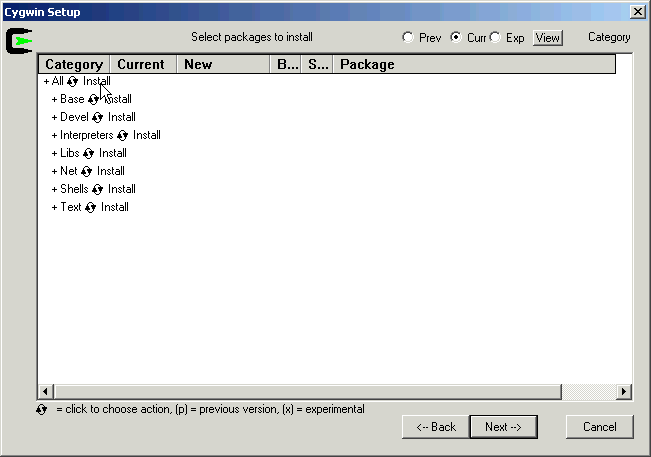

Note that compile your own actors, you will also need the
javac compiler. The javac compiler
is part of the JDK, which is available at:
http://java.sun.com/j2se/1.4.2/.
The javac compiler is not present in the
Java Runtime Environment (JRE)
The Cygwin home page is at
http://sources.redhat.com/cygwin/
Complete installation instructions can be found at
http://sources.redhat.com/cygwin/faq.
Compiling the Ptolemy II Matlab interface and Java Native Interface (JNI) actor requires that the a C compiler be installed. The Matlab interface requires that Matlab be installed on the local machine. The gcc compiler is fairly large, so we provide three separate self-extracting downloads of the cygwin tools for Windows.
cygwinBasic.exe
(10.9 Mb) - The tools necessary to compile and configure Ptolemy II
except for the Matlab interface and the JNI Actor.
Note: currently, this is the version of Cygwin as was made available with Ptolemy II 3.0.
cygwingDevel.exe
(34.6 Mb) - The tools necessary to compile and configure Ptolemy II
including the Matlab interface and the JNI Actor. This download includes
everything in cygwinBasic.exe above.
Note: currently, this is the version of Cygwin as was made available with Ptolemy II 3.0.
Note that the Matlab interface has problems with gcc-3.3, though gcc-3.2.x works fine.
The sources for the above downloadables can be found in
cygwingDevelSrc.exe (116.3 Mb)
cygwinBasic.exe (11.1 Mb)
Note: currently, this is the version of Cygwin as was made available with Ptolemy II 3.0.
cygwinDevel.exe (35.4 Mb).
Note: currently, this is the version of Cygwin as was made available with Ptolemy II 3.0.
Note that the Matlab interface has problems with gcc-3.3, though gcc-3.2.x works fine.
c:\temp\cygwin.
setup.exe should start up automatically for you.
Next
Install from Local Directory should already be selected
for your. Click on Next.
C:\cygwin for the Select Root Install Directory.
All Users,
Default Text File Type to DOS
Next.
Local Package Directory
and click on Next.
Select packages to install window will come
up with the default settings, we need to change from
default to install
click on
the word default that is to the right of All.
The subpages should then change from default to
Install. In the screen shot below, we have just
clicked on default:

Next, which will install all the packages.
Create Desktop Icon and Add to Start Menu
according to your preferences.
c:/cygwin/etc/passwd is created during the
Cygwin installation. If your Windows account is a domain account
and not a local account, then you may need to add an entry
to c:/cygwin/etc/passwd by hand.
mkpasswd command to append
a line with your login information, for example, I used:
mkpasswd -d -u cxh --path-to-home=/cygdrive/c/users >> /etc/passwd
mkpasswd -h will print out help for the mkpasswd
command
PTII environment variable section
Instructions for installing Cygwin from the Cygwin website can be found on the for Ptolemy II Installation Page
If copy and paste are working properly, then you should be able to highlight text by left clicking and dragging the mouse over the text and then hitting the Enter key to copy the highlighted text.
The Cygwin faq at
http://www.cygwin.com/faq/faq.html#SEC55
says:
How can I copy and paste into Cygwin console windows?More precisely:Under Windows NT, open the properties dialog of the console window. The options contain a toggle button, named "Quick edit mode". It must be ON. Save the properties.
Under Windows 9x, open the properties dialog of the console window. Select the Misc tab. Uncheck Fast Pasting. Check QuickEdit.
You can also bind the insert key to paste from the clipboard by adding the following line to your .inputrc file:
"\e[2~": paste-from-clipboard
The download of basic cygwin tools from April, 2003 includes:
_update-info-dir-00160-1 ash-20040127-1 required by cvs base-files-2.6-1 base-passwd-1.1-1 bash-2.05b-16 binutils-20040312-1 bzip2-1.0.2.5 crypt-1.1-1 required by cvs cvs-1.11.6-3 cygwin-1.5.9-1 diffutils-2.8.4-1 editrights-1.01-1 fileutils-4.1-2 findutils-4.1.7-4 gawk-3.1.3-4 gdbm-1.8.3-7 grep-2.5-1 groff-1.18.1-2 required by man gzip-1.3.5-1 less-381-1 libbz2_1-1.0.2-2 required by tar libgdbm-1.8.0.5 required by cvs libiconv2-1.9.1-3 required by sed libintl1-0.10.40-1 libintl2-0.12.1-3 libncurses5-5.2-1 libncurses6-5.2-8 libncurses7-5.3-1 libreadline4-4.1-2 libreadline5-4.2-2 login-1.9-7 optional make-3.80-1 man-1.5k-3 optional minires-0.97-1 Required by openssh ncurses-5.3-1 Required by readline openssh-3.up1-1 Used by cvs openssl-0.9.7d-3 Required by openssh pcre-4.1-1 Required by less (pcre = Perl Compatible regex) readline4-4.1-2 readline5-4.3-5 sed-4.0.9-2 sh-utils-2.0.15-4 tar-1.13.25-5 termcap-20021106-2 terminfo-5.3_20030726-1 texinfo-4.2-4 textutils-2.0.21-1 which-1.5-2 zlib-1.2.1-1
The download of devel cygwin tools from April, 2004, includes all the tools from the basic cygwin download listed above and
autoconf-2.59-1 autoconf-devel-2.59.1 autoconf-stable-2.13-5 binutils-20030307-1 db4.1 required by perl gcc-3.3.1-3 gcc-g++-3.3.1-3 Matlab interface uses a C++ file gcc-mingw-core-20031020 gcc-mingw-g++-20031020-1 gcc-mingw-20020817-5 libbz2_1-1.0.2-5 Used by g++? m4-1.4-1 mingw-runtime-3.2-1 mktemp-1.5-3 perl-5-8.2-1.tar.gz sadly, autoconf requires perl pcre-4.5-1 w32api-2.5-1